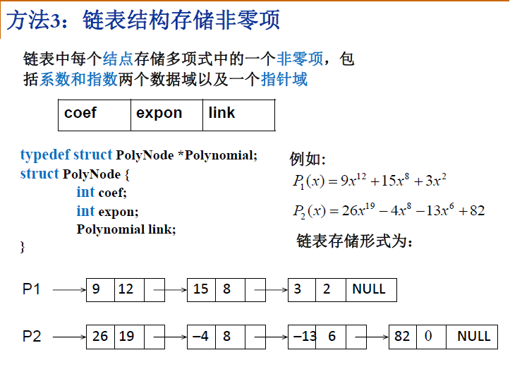

理论介绍
线性表
多项式表示问题的启示：
1. 同一个问题可以有不同的表示（存储）方法
2. 有一类共性问题：有序线性序列的组织和管理
线性表（Linear List）：由同类型数据元素构成有序序列的线性结构
- 表中元素个数称为线性表的长度
- 线性表没有元素时，称为空表
- 表起始位置成表头，表结束为止称表尾
链式表
链式表存储多项式

线性表的抽象数据类型描述
类型名称：线性表（List）
数据对象集：线性表是 n (≥0)个元素构成的有序序列( a1, a2, ¼,an )
操作集：线性表L 属于 List，整数i表示位置，元素X 属于 ElementType，
线性表基本操作主要有：
1、List MakeEmpty()：初始化一个空线性表L；
2、ElementType FindKth( int K, List L )：根据位序K，返回相应元素 ；
3、int Find( ElementType X, List L )：在线性表L中查找X的第一次出现位置；
4、void Insert( ElementType X, int i, List L)：在位序i前插入一个新元素X；
5、void Delete( int i, List L )：删除指定位序i的元素；
6、int Length( List L )：返回线性表L的长度n。

堆栈
队列
题目及应用

Remove Duplicates from Sorted List
Problem Statement
Given a sorted linked list, delete all duplicates such that each element
appear only once.
Example
Given 1->1->2, return 1->2.
Given 1->1->2->3->3, return 1->2->3.
题解
遍历之，遇到当前节点和下一节点的值相同时，删除下一节点，并将当前节点next值指向下一个节点的next, 当前节点首先保持不变，直到相邻节点的值不等时才移动到下一节点。
Python
"""
Definition of ListNode
class ListNode(object):
def __init__(self, val, next=None):
self.val = val
self.next = next
"""class Solution:
"""
@param head: A ListNode
@return: A ListNode
"""
def deleteDuplicates(self, head):
curt = head
while curt:
while curt.next and curt.next.val == curt.val:
curt.next = curt.next.next
curt = curt.next
return head
源码分析
- 首先进行异常处理，判断head是否为NULL
- 遍历链表，curr->val == curr->next->val时，保存curr->next，便于后面释放内存(非C/C++无需手动管理内存)
- 不相等时移动当前节点至下一节点，注意这个步骤必须包含在else中，否则逻辑较为复杂
Remove Duplicates from Sorted List II
Problem Statement
Given a sorted linked list, delete all nodes that have duplicate numbers,
leaving only distinct numbers from the original list.
Example
Given 1->2->3->3->4->4->5, return 1->2->5.
Given 1->1->1->2->3, return 2->3.
题解
上题为保留重复值节点的一个，这题删除全部重复节点，看似区别不大，但是考虑到链表头不确定(可能被删除，也可能保留)，因此若用传统方式需要较多的if条件语句。这里介绍一个处理链表头节点不确定的方法——引入dummy node.
ListNode *dummy = new ListNode(0);
dummy->next = head;
ListNode *node = dummy;
引入新的指针变量dummy，并将其next变量赋值为head，考虑到原来的链表头节点可能被删除，故应该从dummy处开始处理，这里复用了head变量。考虑链表A->B->C，删除B时，需要处理和考虑的是A和C，将A的next指向C。如果从空间使用效率考虑，可以使用head代替以上的node，含义一样，node比较好理解点。
与上题不同的是，由于此题引入了新的节点dummy，不可再使用node->val == node->next->val，原因有二：
- 此题需要将值相等的节点全部删掉，而删除链表的操作与节点前后两个节点都有关系，故需要涉及三个链表节点。且删除单向链表节点时不能删除当前节点，只能改变当前节点的next指向的节点。
- 在判断val是否相等时需先确定node->next和node->next->next均不为空，否则不可对其进行取值。
Partition List
Add Two Numbers
Example
Given 7->1->6 + 5->9->2. That is, 617 + 295.
Return 2->1->9. That is 912.
Given 3->1->5 and 5->9->2, return 8->0->8.
题解
一道看似简单的进位加法题，实则杀机重重，不信你不看答案自己先做做看。
首先由十进制加法可知应该注意进位的处理，但是这道题仅注意到这点就够了吗？还不够！因为两个链表长度有可能不等长！因此这道题的亮点在于边界和异常条件的处理，感谢 @wen 引入的 dummy 节点，处理起来更为优雅！
Python
# Definition for singly-linked list.
# class ListNode(object):
# def __init__(self, x):
# self.val = x
# self.next = None
class Solution:
def add_two_numbers(self, l1, l2):
'''
:type l1: ListNode
:type l2: ListNode
:rtype: ListNode
'''
carry = 0
dummy = prev = ListNode(-1)
while l1 or l2 or carry:
v1 = l1.val if l1 else 0
v2 = l2.val if l2 else 0
val = (v1 + v2 + carry) % 10
carry = (v1 + v2 + carry) / 10
prev.next = ListNode(val)
prev = prev.next
if l1:
l1 = l1.next
if l2:
l2 = l2.next
return dummy.next
Two Lists Sum Advanced
Given two numbers represented by two linked lists, write a function that returns sum list.
The sum list is linked list representation of addition of two input numbers.
Example
Input:
First List: 5->6->3 // represents number 563
Second List: 8->4->2 // represents number 842
Output
Resultant list: 1->4->0->5 // represents number 1405
Challenge
Not allowed to modify the lists.
Not allowed to use explicit extra space.